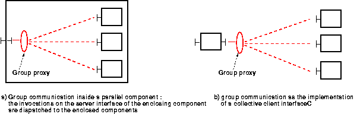

The implementation of the Fractal model is achieved by reusing the extensible architecture of ProActive, notably the meta-object protocol and the management of the queue of requests. This way, components stay fully compatible with standard active objects and as such, inherit from the features active objects exhibit : mobility, security, deployment etc.
A fundamental idea is to manage the non-functional properties at the meta-level : each component is actually an active object with dedicated meta-objects in charge of the component aspects.
ProActive is based on a meta-object protocol (MOP), that allows the addition of many aspects on top of standard Java objects, such as asynchronism and mobility. Active objects are referenced indirectly through stubs : this allows transparent communications, would the active objects be local or remote.
The following diagram explains this mechanism :
Java objects 'b' and 'a' can be in different virtual machines (the network being represented here between the proxy and the body, though the invocation might be local). Object 'b' has a reference on active object 'a' (of type A) through a stub (of type A because it is generated as a subclass of A) and a proxy. When 'b' invokes a method on 'stub_A', the invocation is forwarded through the communication layer (possibly through a network) to the body of the active object. At this point, the call can be intercepted by meta-objects, possibly resulting in induced actions, and then the call is forwarded to the base object 'a'.

ProActive's Meta-Objects Protocol.
The same idea is used to manage components : we just add a set of meta-objects in charge of the component aspects.
The following diagram shows what is changed :
A new set of meta-objects, managing the component aspect (constituting the controller of the component, in the Fractal terminology), is added to the active object 'a'.
The standard ProActive stub (that gives a representation of type A on the figure) is not used here, as we manipulate components. In Fractal, a reference on a component is of type Component, and references to interfaces are of type Interface. 'b' can now manipulate the component based on 'a' through a specific stub, called a component representative. This component representative is of type Component, and also offers references to control and functional interfaces, of type Interface. Note that classes representing functional interfaces of components are generated on the fly : they are specific to each component and can be unknown at compile-time.
Method invocations on Fractal interfaces are reified and transmitted (possibly through a network) to the body of the active object corresponding to the component involved. All standard operations of the Fractal API are now accessible.

The ProActive MOP with component meta-objects and component representative
In our implementation, because we make use of the MOP's facilities, all components are constituted of one active object (at least), are they composite or primitive components. If the component is a composite, and if it contains other components, then we can say it is constituted of several active objects. Also, if the component is primitive, but the programmer of this component has put some code within it for creating new active objects, the component is again constituted of several active objects.
As a result, a composite component is an active object built on top of the CompositeComponent class, and a parallel component is built on top of the ParallelComponent class. These classes are empty classes, because for composite and parallel components, all the action takes place in the meta-level. But they are used as a base to build active objects, and their names help to identify them with the IC2D visual monitoring tool.
Invoking a method on an active object means invoking a method on the stub of this active object. What usually happens then is that the method call is reified as a Request object and transferred (possibly through a network) to the body of the active object. It is then redirected towards the queue of requests, and delegated to the base object according to a customizable serving policy (standard is FIFO).
Component requests, on the other hand, are tagged so as to distinguish between functional requests and controller requests. A functional request targets a functional interface of the component, while a controller request targets a controller of the component.
Like in the standard case (without components), requests are served from the request queue. The serving policy has to be FIFO to ensure coherency. This is where the life cycle of the components is controlled : the dispatching of the request is dependent upon the nature of the request, and corresponds to the following algorithm :
loop if componentLifeCycle.isStarted() get next request // all requests are served else if componentLifeCycle.isStopped() get next controller request // only controller requests are served ; if gotten request is a component life cycle request if request is start --> set component state to started ; if request is stop --> set component state to stopped ; ; ;
One may specify the cardinality of the interfaces of Fractal components (section 6.1). The collection cardinality means that a given component may have several interfaces of a given type ; the name of each of these interfaces has to begin with the same name.
This feature is provided in our implementation through the Groups API, and slightly differs from the Julia implementation : instead of creating one new interface with an extended name for each member of the collection, we just use one interface, which is a group. Collective bindings are then performed transparently as if they were successive bindings on the same interface. Using a collective server interface implies using the Groups API formalism, including the possibility to choose between scattering and broadcasting of the calls. Note that unbinding operations on a collective interface result in the removal of all the bindings of the collection. Examples are provided in the "component programming with ProActive" section.
Because we target largely distributed and parallel applications, we introduced a new kind of component : parallel components (see image "parallel component"). These components are composite components, as they encapsulate other components. But they are specialized : their external server interfaces have a specific behavior. These external server interfaces are connected through the ProActive groups mechanism (i.e. through a group proxy) to the server interfaces of the same type of the internal components. The requests are then processed in a parallel manner.
Next diagram illustrates where group communications are involved.
Group communications allowing collective bindings and parallel components.